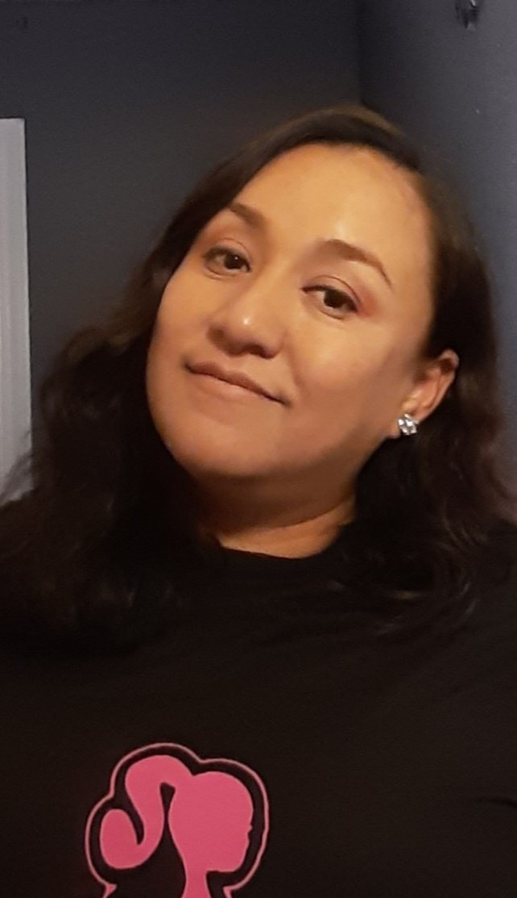

Diana Tafolla | WDD 130
Hello! My name is Diana Tafolla and I am from Mexico city. I enjoy baking treats and creating decorations. I have lived in California most of my life. I got baptised in the Oakland, CA Stake when I was about 9 years old. I became a member of the Oakland sixth ward and met lots of great people. A few years later, my family and I moved to the Hayward, CA stake where I met my husband. We got sealed in the Oakland, CA temple in 2011 for time and all eternity. We also got to be at the rededication of the Oakland, CA temple in 2019 with our family. It was really exciting to see president Dallin H. Oaks there. In 2020, we took a trip to Mexico city. We were super excited to visit the temple there, but unfortunately due to covid, the temple was closed during our visit. In the April 2022 General Conference, President Russell M. Nelson announced there would be a temple built in Modesto, CA. This will be the closest temple to the Manteca, CA stake which is where my family and I currently live. We are super excited and can't wait to have a temple so close to home!